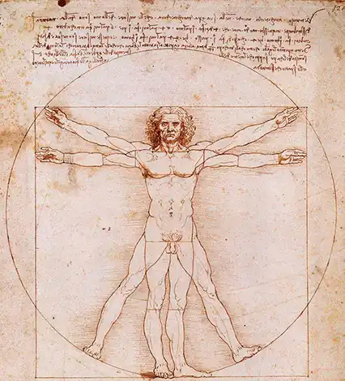

El Renacimiento en las novelas: Un florecimiento de ideas y estilos El Renacimiento, un período de transformación cultural que abarcó los siglos XIV al XVI en Europa, marcó un antes y un después en la literatura, especialmente en el género novelístico. Influenciados por el redescubrimiento de la cultura clásica grecorromana, los autores renacentistas dieron vida a obras que reflejaban una nueva visión del mundo y del ser humano.
El Renacimiento Después de casi diez siglos de mentalidad cerrada, centrada en refugiarse en Dios como remedio para los males de la época (enfermedades, hambre, muertes), la humanidad, cansada de vivir de esa manera, vuelve su mirada hacia los ideales de la cultura clásica Grecia y Roma como modelos de perfección. Aquel fue fruto de la difusión de las ideas del humanismo, que determinaron una nueva concepción del hombre y del mundo
El Renacimiento se origina en Italia en el siglo XV y desde allí se proyectará hacia otros puntos de Europa, pero con matices locales y diferencias que en algunos casos llegan a ser profundas sin dejar a un lado que Italia fue la cuna del Renacimiento, pero debido a problemas no pudo mantener al Renacimiento por conflictos políticos, divisiones internas entre ciudades- estado, etc.
🔸El poder se concentra en manos de los reyes
🔸poder centralizado en el rey estaba marcada por la fragmentación política, con el predominio de las ciudades-estado en Italia y la presencia de monarquías y principados en otras partes del continente
🔸Se produjo un florecimiento de las artes, la literatura, la arquitectura y las ciencias, la burguesía y la Iglesia permitieron el florecimiento de grandes artistas y pensadores renacentistas, como Leonardo da Vinci, Miguel Ángel, Rafael y Maquiavelo.
🔸La nobleza y la Iglesia pierden influencia, aunque se resisten a perder sus privilegios. Una nueva clase social: la burguesía prospera y difunde su mentalidad y sus valores
🔸La actividad mercantil de la burguesía permite viajar a países más lejanos y las distancias se acortan
🔸Durante el Renacimiento, los valores, creencias y el desarrollo de la vida cotidiana estuvieron influenciados por una serie de factores culturales, religiosos y sociales como las que pueden ser el humanismo
🔸Debido a que fue un movimiento intelectual clave que promovió el
estudio de las humanidades clásicas, como la literatura, la filosofía y
el arte de la antigua Grecia y Roma.
🔸Se valoraba la creatividad
humana, el conocimiento y el potencial individual y lo que se
reflejaba en la vida cotidiana a través del énfasis en la educación, el
desarrollo personal y la exploración intelectual
🔺Arquitectura: El clasicismose convirtió en el estilo dominante, inspirado en los templos, teatros y otros edificios de la Grecia y Roma antiguas. Se caracterizaba por la simetría, el orden, las proporciones armónicas y el uso de elementos como columnas, frontones y arcos.
🔺Escultura:Los escultores renacentistas se inspiraron en las obras maestras de la escultura griega, como las de Fidias y Praxíteles. Buscaban representar la belleza idealizada del cuerpo humano y la perfección de las formas.
🔺Pintura: La pintura renacentista se caracterizó por un nuevo realismo, con una mayor atención al detalle, la perspectiva y la anatomía. Los pintores se inspiraron en la mitología clásica, los paisajes y la vida cotidiana de la antigua Grecia y Roma.
🔺El humanismo: Esta corriente de pensamiento puso al ser humano en el centro del universo, revalorizando su capacidad de razón, creación y libre albedrío. Se inspiró en las ideas de filósofos griegos como Sócrates, Platón y Aristóteles.
🔺El interés por la historia: Los humanistas estudiaron la historia antigua con el objetivo de comprender el pasado y aprender de él. Se tradujeron y comentaron obras de historiadores griegos y romanos como Heródoto, Tucídides y Polibio.
🔺La ciencia: El Renacimiento también fue una época de grandes avances científicos, impulsados por el estudio de las obras de científicos griegos como Ptolomeo, Arquímedes y Euclides.
🔺El resurgimiento de las lenguas clásicas: El griego y el latín se convirtieron en lenguas de estudio y cultura, lo que permitió un mayor acceso a las obras de autores clásicos como Homero, Sófocles, Platón, Virgilio y Cicerón.
🔺Géneros literarios: Se recuperaron y reinterpretaron géneros literarios clásicos como la épica, la lírica, la tragedia y la comedia. Autores como Dante Alighieri, Francesco Petrarca y William Shakespeare se inspiraron en los modelos clásicos para crear sus propias obras
🔺Temas y motivos: La mitología griega y romana, con sus dioses, héroes y leyendas, fue una fuente inagotable de inspiración para los escritores renacentistas. También se abordaron temas como la política, la filosofía, el amor y la naturaleza, siguiendo la tradición de los autores clásicos.